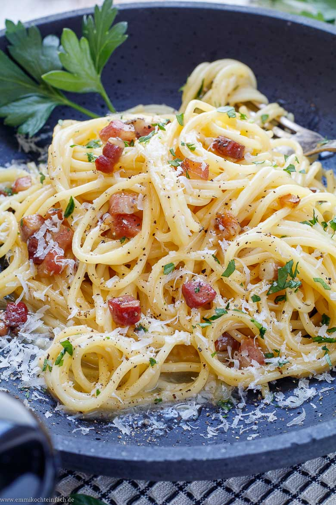
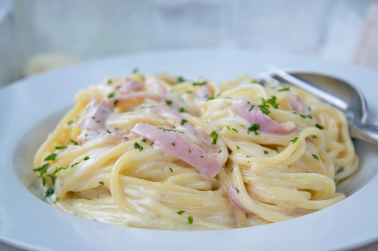

Carbonara ist eines der bekanntesten Gerichte der italienischen Küche — und gleichzeitig eines der am meisten falsch zubereiteten.
Kein Rahm, keine Fertigsauce: Die echte Carbonara lebt von wenigen, hochwertigen Zutaten und der richtigen Technik.
Wer das einmal verstanden hat, hat ein Rezept fürs Leben.
Schnell gemacht, beeindruckend im Ergebnis — perfekt für Alltag und Gäste gleichermassen.
4 Personen Ca. 30 Min.
| Zutat | Menge |
|---|---|
| Spaghetti | 400g |
| Guanciale | 150g |
| Eigelb | 4 |
| Ei | 1 |
| Pecorino Romano, gerieben | 80g |
| Parmesan, gerieben | 40g |
| Schwarzer Pfeffer, gemahlen | 2TL |
| Salz | 1EL |


| Rezept | URL |
|---|---|
| Pasta Cacio e Pepe | bbcgoodfood.com |
| Pasta all'Amatriciana | seriouseats.com |
| Pasta Aglio e Olio | simplyrecipes.com |
| Cremige Pilzpasta | chefkoch.de |